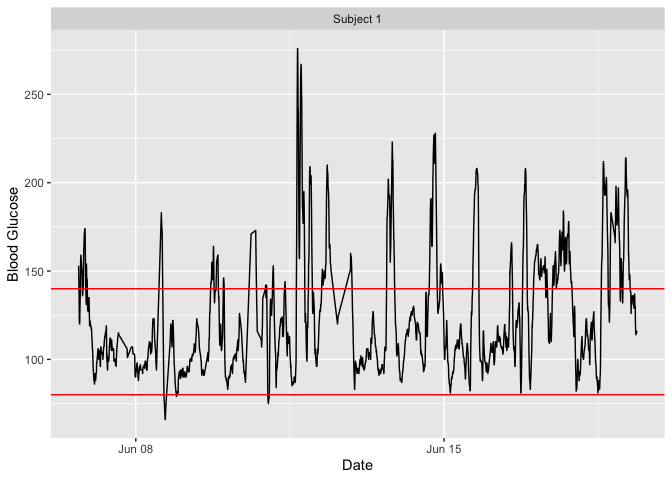
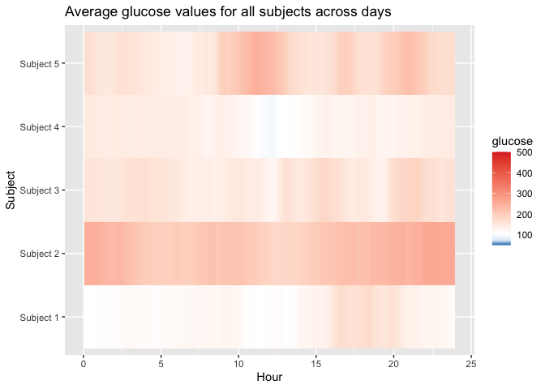

iglu: Interpreting data from Continuous Glucose Monitors (CGMs)
The R package ‘iglu’ provides functions for outputting relevant metrics for data collected from Continuous Glucose Monitors (CGM). For reference, see “Interpretation of continuous glucose monitoring data: glycemic variability and quality of glycemic control.” Rodbard (2009).
iglu comes with two example datasets: example_data_1_subject and example_data_5_subject. These data are collected using Dexcom G4 CGM on subjects with Type II diabetes. Each dataset follows the structure iglu’s functions are designed around. Note that the 1 subject data is a subset of the 5 subject data. See the examples below for loading and using the data.
Installation
# Plain installation devtools::install_github("irinagain/iglu") # iglu package # For installation with vignette devtools::install_github("irinagain/iglu", build_vignettes = TRUE)
Example
library(iglu) data(example_data_1_subject) # Load single subject data ## Plot data # Use plot on dataframe with time and glucose values for time series plot plot_glu(example_data_1_subject)

# Summary statistics and some metrics summary_glu(example_data_1_subject) #> # A tibble: 1 x 7 #> # Groups: id [1] #> id Min. `1st Qu.` Median Mean `3rd Qu.` Max. #> <fct> <dbl> <dbl> <dbl> <dbl> <dbl> <dbl> #> 1 Subject 1 66 99 112 124. 143 276 in_range_percent(example_data_1_subject) #> # A tibble: 1 x 4 #> id in_range_70_140 in_range_70_180 in_range_80_200 #> <fct> <dbl> <dbl> <dbl> #> 1 Subject 1 73.7 91.7 96.0 above_percent(example_data_1_subject, targets = c(80,140,200,250)) #> # A tibble: 1 x 5 #> id above_140 above_200 above_250 above_80 #> <fct> <dbl> <dbl> <dbl> <dbl> #> 1 Subject 1 26.7 3.70 0.446 99.4 j_index(example_data_1_subject) #> # A tibble: 1 x 2 #> id j_index #> <fct> <dbl> #> 1 Subject 1 24.6 conga(example_data_1_subject) #> # A tibble: 1 x 2 #> id conga #> <fct> <dbl> #> 1 Subject 1 37.0 # Load multiple subject data data(example_data_5_subject) plot_glu(example_data_5_subject, plottype = 'lasagna', datatype = 'average') #> Warning in CGMS2DayByDay(., tz = tz, dt0 = dt0, inter_gap = inter_gap): #> During time conversion, 12 values were set to NA. Check the correct time zone #> specification.

below_percent(example_data_5_subject, targets = c(80,170,260)) #> # A tibble: 5 x 4 #> id below_170 below_260 below_80 #> <fct> <dbl> <dbl> <dbl> #> 1 Subject 1 89.6 99.7 0.652 #> 2 Subject 2 17.7 78.9 0 #> 3 Subject 3 73.5 96.0 0.913 #> 4 Subject 4 91.8 100 2.05 #> 5 Subject 5 55.3 90.3 1.13 mage(example_data_5_subject) #> # A tibble: 5 x 2 #> id mage #> <fct> <dbl> #> 1 Subject 1 53.4 #> 2 Subject 2 78.2 #> 3 Subject 3 76.6 #> 4 Subject 4 42.9 #> 5 Subject 5 90.0